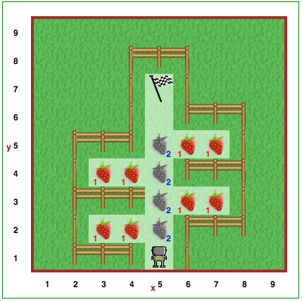

Étape 5: Définir de nouvelles fonctions¶
Didacticiel-Tutorial¶
Après avoir terminé la dernière étape, vous vous êtes rendu compte qu’avoir Reeborg tourner à gauche trois fois donnait le même résultat final que s’il tourne tou simplement à droite. Il devenait probablement assez ennuyant de devoir écrire trois instructions turn_left () chaque fois que vous voulez que Reeborg tourne à droite. Ne serait-il pas plus agréable de pouvoir simplement écrire «turn_right ()»?
Tout comme nous pouvons appeler des fonctions intégrées telles que turn_left () et move (), nous pouvons également créer nos propres fonctions. Nous pouvons définir une nouvelle fonction Python comme ceci:
def un_nom_super_pertinant():
# une ligne de code
# en retrait au même niveau
`` def`` est le premier mot clé Python ** que nous avons appris. Les mots-clés sont des mots qui ont une signification particulière dans un langage de programmation donné. Notez que deux points ``: `` précèdent ce que l’on appelle un bloc de code, et que la partie en retrait qui suit est le corps/body de la fonction. Il est nécessaire en Python de mettre en retrait ces blocs de code avec le même nombre d’espaces au début de chaque ligne, ce qui, en conséquence, facilite l’identification du corps de fonction pour un lecteur humain.
Ecrivons notre première fonction Python:
def turn_right():
turn_left()
turn_left()
turn_left()
C’est tout! Vous pourrez maintenant éviter d’écrire trois fonctions turn_left () pour simuler un virage à droite!
Comment penser à def¶
Note
Veuillez noter que cette explication simplifiée ne tien pas compte de ce que nous appelons la portée variable/variable scope, que nous aborderons plus tard.
Vous venez de voir comment définir une fonction en Python. Il est fort probable que vous ayez tout de suite compris comment y penser mais, juste au cas où, voici une explication plus détaillée qui vous aidera non seulement à comprendre le fonctionnement des fonctions, mais également à toute autre construction Python impliquant des blocs de code.
Supposons que nous ayons les éléments suivants:
def turn_right(): # le début du bloc de code suit
turn_left()
turn_left()
turn_left() # fin du bloc de code
move()
turn_right()
move()
Ceci est équivalent à ce qui suit:
# définir un fonction
def turn_right():
turn_left()
turn_left()
turn_left()
move()
# début du bloc de code dans turn_right()
turn_left()
turn_left()
turn_left()
# fin du bloc de code
move()
C’est-à-dire, def définit un nom que nous pouvons utiliser comme synonyme pour tout le code qui apparaît à l’intérieur du bloc de code, et chaque fois que le synonyme est appelé [c’est-à-dire, le nom apparaît suivi par ()], on peut dire que cela équivaut l’insertion du bloc de code tel quel à cet endroit.
À ton tour¶
Ouvrez l’étape 5 sur l'environnement Reeborg.
Reeborg veut cueillir des fraises dans son jardin. Le jardin de Reeborg a une forme très étrange, comme vous l’avez vu ci-dessus. Définissez une fonction prend_deux_baies() qui ramasse deux fraises et les pose par terre. Utilisez-le quatre fois dans le cadre de votre solution. Comme toujours, veillez utiliser les commentaires et les espaces vide pour augmenter la lisibilité de votre solution!